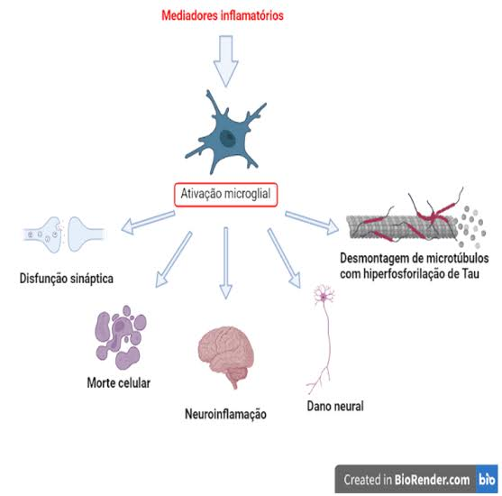
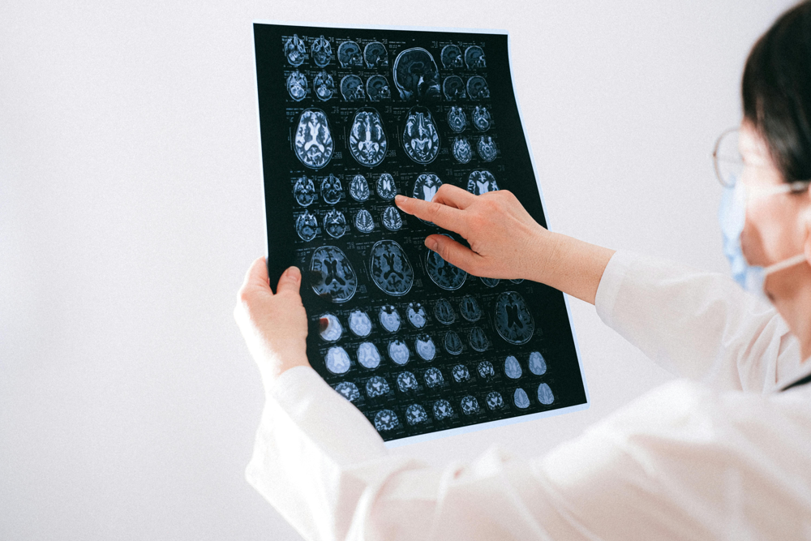
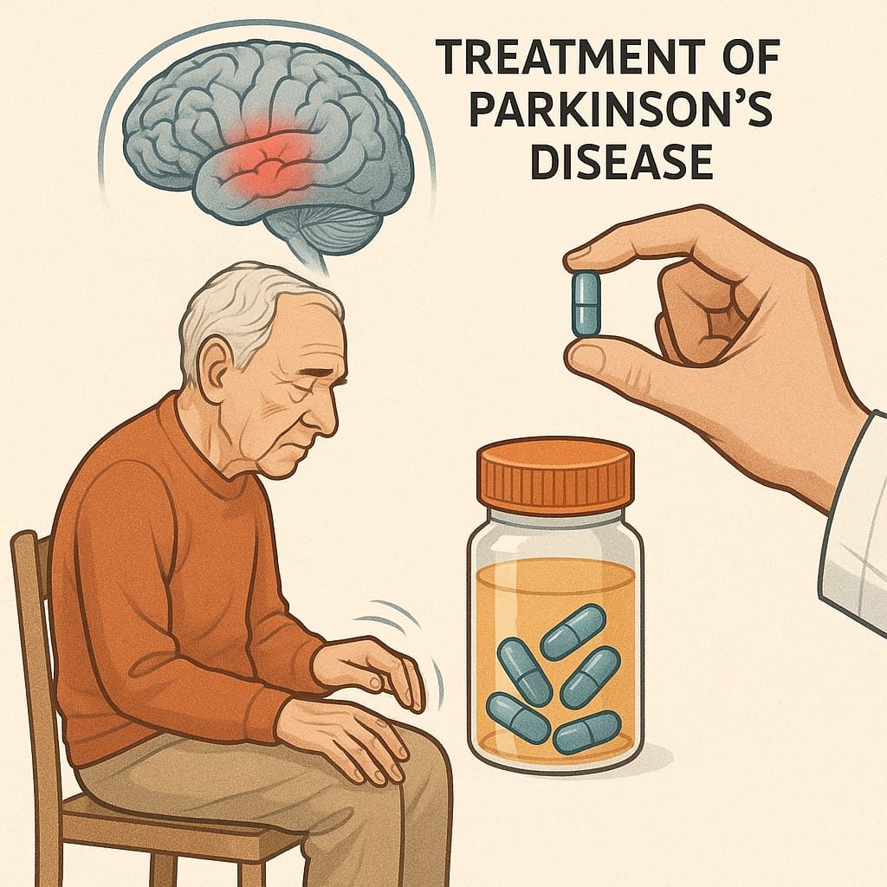

CLIQUE NOS BOTÕES PARA APRENDER DE FORMA DIVERTIDA! 🎉
🧠 O que é o sistema nervoso?
Sistema Nervoso Central: divide-se estruturalmente em Sistema Nervoso Central (SNC) e Sistema Nervoso Periférico (SNP). O SNC é formado pelo encéfalo (cérebro, cerebelo e tronco encefálico) e pela medula espinhal, servindo como centro de integração e comando das funções corporais. .
Sistema Nervoso Periférico:compõe-se de nervos cranianos e espinhais que conduzem informações entre o SNC e o restante do corpo, incluindo fibras sensoriais (dos receptores ao SNC) e motoras (do SNC aos músculos)..
⚙️ Fisiopatologia
As doenças do sistema nervoso são uma categoria ampla de condições que afetam o cérebro, a medula espinhal e os nervos. Elas podem ter uma grande variedade de causas. Aqui vamos citar apenas 4 categorias didáticas de doenças neurológicas: doenças degenerativas do sistema nervoso, doenças do sistema nervoso periférico, doenças do sistema nervoso autônomo e doenças infecciosas.
DOENÇAS DEGENERATIVAS DO SISTEMA NERVOSO:
As doenças degenerativas do sistema nervoso são condições caracterizadas pela degeneração progressiva das células nervosas. Essas doenças são tipicamente crônicas e progressivas, o que significa que os sintomas pioram com o tempo. A degeneração das células nervosas leva à perda das funções que elas desempenham, resultando em uma série de problemas motores, cognitivos, sensoriais e emocionais. Estão frequentemente associadas ao envelhecimento, embora algumas possam começar mais cedo na vida. Entre as principais, estão: Doença de Alzheimer, doença de Parkinson e esclerose lateral amiotrófica (ELA).
DOENÇAS DO SNP:
Envolvem condições que afetam os nervos fora do cérebro e da medula espinhal. O SNP é responsável por conectar o sistema nervoso central aos músculos, órgãos e pele, e sua função é essencial para o movimento, sensação e a comunicação entre o corpo e o cérebro. Quando é afetado, isso pode resultar em uma variedade de sintomas, como fraqueza muscular, dor, formigamento, perda de sensação e dificuldade de coordenação. Alguns exemplos importantes são: Síndrome de Guillain-Barré, Neuralgia do Trigêmeo e Neuropatia Periférica.
DOENÇAS DO SNA:
É uma parte fundamental do sistema nervoso responsável pelo controle involuntário de várias funções essenciais do corpo, como a frequência cardíaca, a pressão arterial, a respiração, a digestão e a temperatura corporal. Ele é composto por duas divisões principais: o sistema nervoso simpático, que prepara o corpo para a resposta ao estresse, e o sistema nervoso parassimpático, que ajuda a manter o corpo em repouso e promove a recuperação e o relaxamento. Podemos citar algumas causas como: Síndrome de Horner, neuropatias autonômicas, atrofia de múltiplos sistemas.
DOENÇAS INFECCIOSAS DO S.N:
As doenças infecciosas do sistema nervoso envolvem a infecção do cérebro, medula espinhal ou nervos periféricos por micro-organismos como vírus, bactérias, fungos ou parasitas. Entre as principais, estão: Meningite e encefalite.

🚨 Sinais e Sintomas
Os sintomas de doenças no sistema nervoso podem variar bastante, dependendo da região afetada. Entre os sintomas mais comuns estão: dores de cabeça intensas e frequentes, convulsões, perda de memória, fraqueza muscular, dificuldade para falar ou se mover, alterações de humor, confusão mental e formigamentos.
🩺 Diagnóstico
O diagnóstico de doenças neurológicas é feito através da observação clínica e do uso de exames como ressonância magnética, tomografia computadorizada, eletroencefalograma (EEG) e exames de sangue. A anamnese detalhada e os testes neurológicos realizados pelo médico são essenciais para detectar alterações no funcionamento do sistema nervoso.

💊 Tratamento
O tratamento para doenças do sistema nervoso varia conforme a condição. Pode incluir o uso de medicamentos anticonvulsivantes, analgésicos, antidepressivos, fisioterapia, terapia ocupacional, acompanhamento psicológico e até intervenções cirúrgicas. A reabilitação neurológica também é fundamental para melhorar a qualidade de vida dos pacientes.

👩⚕️ Cuidados de Enfermagem
Os cuidados de enfermagem incluem a observação contínua do paciente, administração correta de medicamentos, apoio emocional à pessoa e à família, prevenção de complicações como úlceras de pressão e infecções, além de estimular a comunicação e a mobilidade. O enfermeiro deve seguir planos de cuidados específicos para cada diagnóstico neurológico, promovendo o conforto e a segurança do paciente.